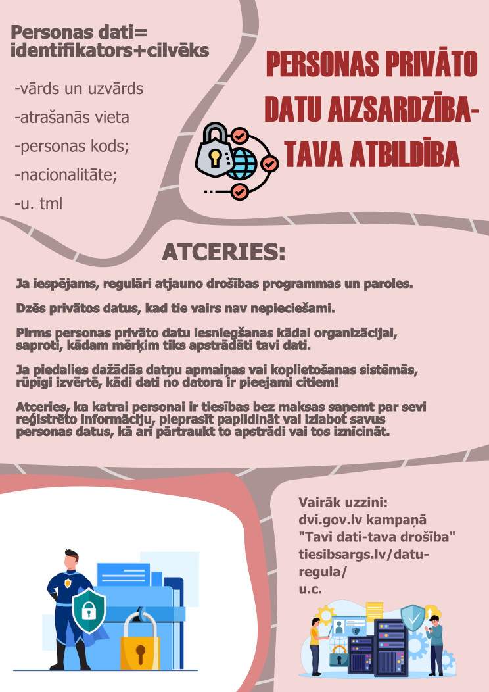

Baneris
Veidojām arī animācijas jeb drīzāk gif formāta baneri GIMP.
<
Veidojām arī animācijas jeb drīzāk gif formāta baneri GIMP.
<Plakātu veiodju Insckape. Tas bija laikietilpīgs process, jo bija jānošķir informācijas nopietnība un svarīgums.
<Reklāma tika izvietota montētajā 3D kuba izveidošanas video. To veidoju Powerpoint.